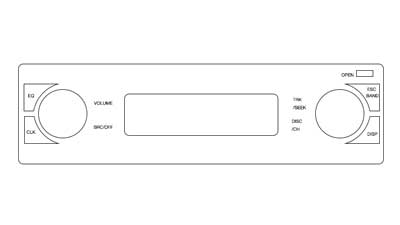

This is what my car stereo looks like. Pretty confusing if you can't read the fine print and before playing with it for a while.
Created a wireframe of the current layout of the stereo to better assist with adjustments

Modified the layout by combining the clock and display button. Removed the second dial, while adding an up and down button for navigation. Created FM/AM buttons. Wanted to give it a standard stereo look.

Move all of the navigation button controls to one central location on the left. Removed the up and down buttons by adding the arrows for menu, cd, and radio navigation. I left the number buttons since they make moving between stations easy.